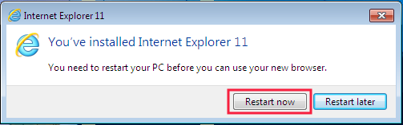
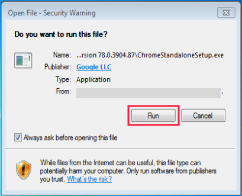
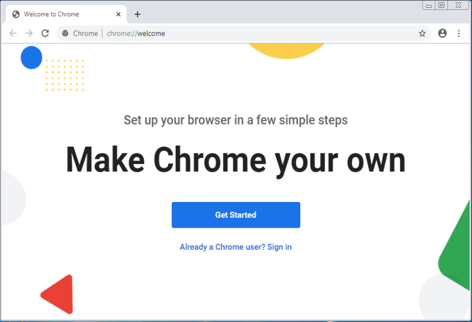

Instalasi Software Pendukung
Windows 10
Install Internet Explorer versi 11
Pertama, install Internet Explorer versi 11 sebagai berikut:
- Download Internet Explorer versi 11 klik disini.
-
Cari file hasil download, klik 2x dan kemudian klik tombol Install.

-
Tunggu proses instalasi.

-
Instalasi selesai, klik tombol Restart now

- Setelah restart, buka Internet Explorer versi 11, tekan Alt + X pada keyboard, lalu pilih Internet Options.
-
- Untuk pengguna Windows 7 -> klik tab Programs, klik tombol Make Default -> klik tombol OK dan kemudian tutup Internet Explorer.
- Untuk pengguna Windows 10 -> Klik tab Programs -> klik Make Internet Explorer the default browser -> pada panel Programs (sebelah kiri) cari dan pilih Internet Explorer -> klik Set this program as default -> klik tombol OK -> klik tombol OK lagi dan kemudian tutup Internet Explorer.
- Selesai.
Catatan: Apabila Anda menggunakan Windows 7 pastikan telah Windows 7 SP 1 sebelum menginstall Internet Explorer versi 11; jikalau belum, download dan install Service Pack 1 (SP 1) terlebih dahulu klik disini.
Install Google Chrome
Kedua, install Google Chrome sebagai berikut:
- Download Google Chrome, klik disini.
-
Cari file hasil download, klik 2x, apabila muncul jendela seperti di bawah ini klik tombol Run.

-
Apabila muncul jendela seperti di bawah ini klik tombol Yes.

-
Tunggu proses persiapan instalasi.

-
Tunggu proses instalasi.


- Masuk Local Disk (C): -> Program Files atau Program Files (x86) -> Google -> Update -> pada file GoogleUpdate ganti namanya menjadi GoogleUpdateNoUpdate.
- Selesai.
Install Chrome Driver
Ketiga, install Chrome Driver sebagai berikut:
-
Buka Google Chrome, pada search bar ketik: chrome://settings/help lalu tekan Enter di keyboard dan catat versi Google Chrome.

- Download Chrome Driver yang versinya sama dengan Google Chrome, klik disini. Misal Google Chrome-nya v78, maka download Chrome Driver v78.
- Cari file hasil download, extract dan kemudian copy serta paste file hasil extract di folder OtomaX lihat disini atau folder lokasi instalasi OtomaX Anda.
- Selesai.
Install Selenium WebDriver
Keempat, install Selenium WebDriver sebagai berikut:
- Download Selenium WebDriver, klik disini.
- Cari file hasil download, extract dan kemudian copy serta paste file hasil extract di folder OtomaX lihat disini atau folder lokasi instalasi OtomaX Anda.
- Selesai.
Install Microsoft SQL Server Express
Kelima, install Microsoft SQL Server Express sebagai berikut:
- Cari file Microsoft SQL Server Express yang sudah Anda download. Jika belum download silahkan download dahulu disini.
- Klik 2x pada file Microsoft SQL Server Express, dan kemudian klik New SQL Server stand-alone installation or add features to an existing installation:

- Centang CheckBox I accept the license terms, dan kemudian klik Next.


- Klik Next.

- Klik Next.

- Klik Next.

- Klik Next.
- Klik Next.

- Klik Next.


- Install sukses, klik Close.

- Klik icon close.

Install Microsoft SQL Server Management Studio Express
Keenam, install Microsoft SQL Server Management Studio Express sebagai berikut:
- Cari file Microsoft SQL Server Management Studio Express yang sudah Anda download. Jika belum download silahkan download dahulu disini.
- Klik 2x file Microsoft SQL Server Management Studio Express.

- Klik New SQL Server stand-alone installation or add features to an existing installation:


- Klik Next.

- Klik Next.
- Centang CheckBox I accept the license terms, dan kemudian klik Next.

- Klik Next.
- Klik Next.

- Install sukses, klik Close.
- Klik icon close.
Selesai
Selanjutnya install Sotware OtomaX Free Edition, selengkapnya klik disini.
Catatan: Tata cara di atas berlaku untuk Windows 10 32 bit maupun 64 bit.
Trobleshotting

Apabila saat menginstall Microsoft SQL Server Management Studio Express muncul pop up seperti gambar diatas, lakukan hal berikut:
- Download NET Framework 3.5 Offline Installer for Win 10, 8.x klik disini.
- Extract file yang baru di download, lalu copy folder sources hasil extract dan paste di Local Disk (C:) komputer Anda. Perhatikan gambar dibawah ini:
-
Jalankan NET-Framework-3.5-Offline-Installer-v2.3 dan pada Select Installation Media (DVD or Virtual Drive) pilih C:\, kemudian klik tombol Install.

Akan muncul tampilan seperti di bawah ini, silahkan ditunggu hingga selesai

-
Ketika muncul tampilan seperti dibawah ini, klik tombol Enter pada keyboard Komputer.

Klik OK.

- Selesai.
Selanjutnya install kembali Microsoft SQL Server Management Studio Express sesuai panduan diatas.